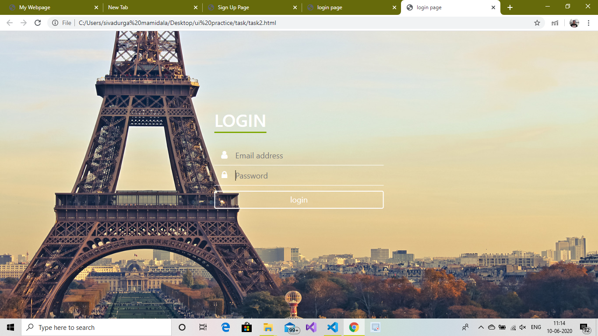

Title : CHARACTERIZATION OF FRICTION STIR WELDED DISSIMILAR POLYMERIC MATERIALS
Summary : Friction stir welding (FSW) is relatively a new welding method where heat generated by friction is used to forge components together under an axial force. The heat generated does not exceed the material melting point. Here I focused on welding joint of dissimilar polymers with a newly developed tool, in order to evaluate the effect of the welding parameters on the weld strength. And describes the process of developing a stationary Friction Stir Welded tool for welding thin plates of High Density polyethylene(HDPE), Nylon 66. The welds produced with this tool improved the weld surface quality and strength significantly.
Title : Design of chain used in Hero Jet Gold 28T Bicycle
Summary : In this project, I am discussing about roller chain used in Hero Jet Gold 28T. Roller chains or Bush roller chain is the type of chain drive most commonly used to transmission of mechanical power on many kinds of Domestic, Industrial and Agricultural machineries, Including conveyors, Motor cycles, Bicycles, Print press. I am discussing the design of roller chain used in hero jet gold bicycle, construction and its manufacturing processes.
Organization : Railway bridge workshop, Jalandhar
Duration : 12 June – 24 July, 2017
Description : Here I came to know about what are the requirement that need to form the industry and working process or flow chart of work taking place in this industry. The main aim of this workshop is to build the bridge according to design from the headquarters. Workshop is mainly divided into 5 sections. They are Smithy Shop, Machine Shop, Fabrication Shop, Cutting Shop and ICE Shop. Each shop has its own importance and has different machineries. Under these sections they are two subdivisions. They are Pneumatic Shop and Welding Shop. Under the guidance of Sh. Raman Kumar (MCM) I gained the knowledge about the process of machinery and their maintenance, different cranes and its types that are used in this workshop. During this industrial experience I’ve learnt a lot of things that I never heard before and I enjoyed a lot while interacting with them. Finally I analyzed the machineries and working process that take place in this workshop.
Organization : Republic motors, Jalandhar
Duration : 15 June – 28 July, 2016
Description : Manufacturing of Formula SAE: Here I learnt about the different parts of vehicle like breaks(types of breaks), steering(types of steering and steering ratio), two stoke and four stoke engine( their working process), Gear ratio, use of differential shaft and its working, wheel (know about positive caster angle and negative caster angle), turning radius. By taking the prototype as reference and supervising (or) instructed by sir we did a different operations to complete task to manufacturing of formula SAE car. I learnt the processes like cutting, shaping, grinding, fitting, drilling and taking tolerance. I came to know how labor4 and machine works together to manufacturing and advantage of team work.
Organization : pratian technologies
Description :
Organization : NA
Description : I taken a reference of udemy website and developed the page accordingly.
Organization : NA
Description : I took a concept of parallax and developed the webpage.
Organization : NA
Description :
Organization : NA
Description :
